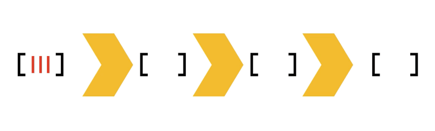
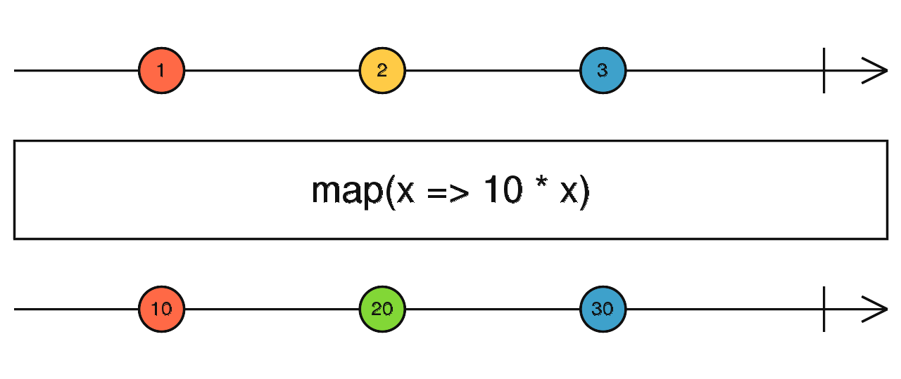
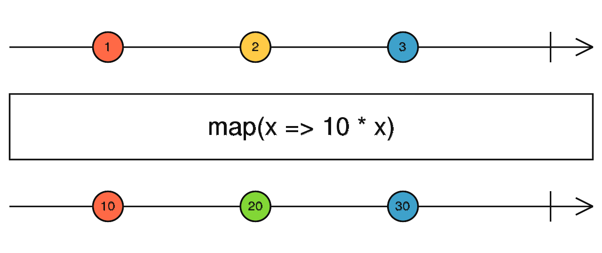

Array.reduce
array.reduce(
(accumulator, value, index, array) => fn, initialValue
);Big expectations
Big expectations
What is FP?
- Pure functions
- No side effects
- Immutability
- State???
The accumulator
The superpower of array.reduce
Combining values
const sum = (arr) => arr.reduce((acc, next) => {
acc += next;
return acc;
}, 0);
console.log(sum([1, 2, 3])); // 6Bit flags
const uiOptions = {
NO_FULLSCREEN: 1, // Hide fullscreen button
NO_VOLUME_CONTROL: 2, // Hide volume control bar
NO_MUTE: 4, // Hide mute button
// ++
};
['NO_FULLSCREEN', 'NO_MUTE']
.map((o) => uiOptions[o])
.reduce((accumulator, currentValue) => {
return accumulator + currentValue;
}, 0);
// == 5 eller 0b101Polyfill
function reduce (array, reduceFn, acc){
for(let i = 0; i < array.length; i++){
acc = reduceFn(acc, array[i], i, array);
}
return acc;
}
console.log(reduce([1,2,3], (acc, elem) => {
acc += elem;
return acc;
}, 0)); // 6
Polyfill (reversed)
function reduceRight (array, reduceFn, acc){
for(let i = array.length - 1; i > -1; i--){
acc = reduceFn(acc, array[i], i, array);
}
return acc;
}
console.log(reduceRight("123", (acc, elem) => {
acc += elem;
return acc;
}, "")); // 321
Go (1.18/generics)
func reduce[T, M any](s []T, f func(M, T) M, initValue M) M {
acc := initValue
for _, v := range s {
acc = f(acc, v)
}
return acc
}
numbers := []int{1, 2, 3}
sum := reduce(numbers, func(acc, current int) int {
return acc + current
}, 0)
fmt.Println(sum) // 6
JS universially supported
Typical use cases
Array to object
const groupBy = (arr, key) => arr.reduce((acc, next) => {
acc[next[key]] = next;
return acc;
}, {});
console.log(groupBy([
{ id: "en_US", str: "hello" }, { id: "nb_NO", str: "hei" }
], "id"));
// {
// en_US: { id:"en_US", str: "hello" },
// nb_NO: { id:"nb_NO", str: "hei" },
// }
Map (object)
const map = (obj, fn) => Object.keys(obj)
.reduce((acc, key) => {
acc[key] = fn(obj[key]);
return acc;
}, {});
console.log(map({
en_US: { str: "hello" }, nb_NO: { str: "hei" }
}, (obj) => ({
...obj,
str: `${obj.str[0].toUpperCase()}${obj.str.slice(1)}`})
));
// {
// en_US: { str: "Hello" },
// nb_NO: { str: "Hei" },
// }Filter (object)
const filter = (obj, fn) => Object.keys(obj)
.reduce((acc, key) => {
if(fn(key, obj[key])){
acc[key] = obj[key];
};
return acc;
}, {});
console.log(filter({
en_US: { str: "hello" }, nb_NO: { str: "hei" }
}, (key /*, value */) => key !== "en_US"));
// {
// nb_NO: { str: "Hei" },
// }Other usages
Redux
function userReducer(state = initialState, action){
// state === accumulator, action === next
switch(action.type) {
case "USER_FETCHED":
return {
...state,
count: state.count + 1,
user: action.user
};
default:
return state;
}
return state;
}
var state = { count: 0 };
var state = userReducer(state, {
type: "USER_FETCHED",
user: { id: 123, name: "hei verden" },
});Sequential promises
const promiseQueue = (taskArr) =>
taskArr.reduce(
(previous, next) => previous.then(next),
Promise.resolve()
);
const wait = (delay, str) => () => new Promise(resolve => {
setTimeout(() => {
console.log(str);
resolve();
}, delay);
});
wait(2000, "first")();
wait(500, "second")();
promiseQueue([
wait(2000, "first"),
wait(500, "second"),
]);
// first - after 2 seconds
// second - after 2.5 secondsAdvanced usage
Composition
// sync
const add = (x) => x + x;
const square = (x) => x * x;
const result = square(10); // 100
console.log(add(result)); // 200
// or just
// add(square(10)); // 200Composition
const add = (x) => x + x;
const square = (x) => x * x;
const compose = (...fns) => {
return (value) => {
return fns.reduceRight((acc, fn) => {
return fn(acc);
}, value);
}
}
compose(add, square)(10); // 200
// same as
// add(square(10))Composition
const add = (x) => x + x;
const square = (x) => x * x;
// compressed
const compose = (...fns) =>
(value) => fns.reduceRight((acc, fn) => fn(acc), value);
compose(add, square)(10); // 200
// same as
// add(square(10))Why!?!?
- Partial application / currying
- Lazy evaluation
- Plugin architecture
const calulationChain = compose(add, square);
createApplication(calulationChain);
function createApplication(onRender) {
// ... get input from user, eg. `10`
const renderResult = onRender(userInput);
}Pipe
const add = (x) => x + x;
const square = (x) => x * x;
// Reversed order of arguments
const pipe = (...fns) =>
(value) => fns.reduce((acc, fn) => fn(acc), value);
pipe(square, add)(10); // 200
// same as
// add(square(10))Async Pipe
const add = (x) =>
new Promise((r) => setTimeout(() => r(x + x), 2000));
const square = (x) =>
new Promise((r) => setTimeout(() => r(x * x), 500));
const asyncPipe = (...fns) =>
async (value) =>
await fns.reduce(async (acc, fn) =>
await fn(await acc), value);
asyncPipe(square, add)(10)
.then(console.log); // 200 after 2.5sMiddlewares
const myApp = new App();
app.use(authentication);
app.get("/user", displayUser);
app.listen("1234"); // start serverCallbacks
async function authentication({ request, response }) { const user = await getUser(request); // cookie lookup ? return { request: { ...request, user }, response, }; }function displayUser({ request, response }) { response.send(`<!doctype html> <html> <body> <h1>Hello ${request.user.displayName}</h1> </body> </html>`); }
Dummy implementation
class App {
#middlewares = [];
#routes = {};
use(middleware) {
this.#middlewares.push(middleware);
}
get(route, cb) {
this.#routes = {
...this.#routes,
get: {
...this.#routes.get,
[route]: cb,
},
};
}
handle({ request, response }) {
asyncPipe(
...this.#middlewares,
this.#routes[request.method][request.path]
)({ request, response });
}
}One more thing?
Yes - transducers
- Process each array element only once
- Multiple iterable data formats (arrays, streams, trees)
- Efficient for large (or unlimited) data sets
Signal processing
Higher order reducers
const map = f => step => (a, c) => step(a, f(c));
const filter = predicate => step => (a, c) => predicate(c) ? step(a, c) : a;
const compose = (...fns) => (value) => fns.reduceRight((acc, fn) => fn(acc), value);
const pipeline = compose(
map((obj) => ({
...obj,
str: `${obj.str[0].toUpperCase()}${obj.str.slice(1)}`,
})),
filter((obj) => obj.id !== "en_US")
);
// import a standard curry, or use this magic spell:
const curry = (f, arr = []) => (...args) => (a => a.length === f.length ? f(...a) : curry(f, a))([...arr, ...args]);
const transduce = curry((step, initial, xform, foldable) => foldable.reduce(xform(step), initial));
const concatArray = (a, c) => a.concat([c]);
const toArray = transduce(concatArray, []);
toArray(pipeline, [{ id: "en_US", str: "hello" }, { id: "nb_NO", str: "hei" }]);
processing
Ramda lib .
import { map, filter, compose, transduce } from "ramda";
const input = [
{ id: "en_US", str: "hello" }, { id: "nb_NO", str: "hei" }
];
const filterAndMap = compose(
filter((obj) => obj.id !== "en_US"),
map((obj) => ({
...obj,
str: `${obj.str[0].toUpperCase()}${obj.str.slice(1)}`,
}))
);
const groupBy = (acc, next) => ({
...acc,
[next.id]: next,
});
const results = transduce(
filterAndMap, // Transducer function (order reversed)
groupBy, // Final reducer
{}, // Initial value
input // Array to be processed
);
console.log(results);
// { nb_NO: { id: "nb_NO", str: "Hei" } }Too much low level?
🤯🤯...buffer overflow..🤯🤯
Observables
- TC39 - stage 1 proposal
- Basically a transducer with some helper methods
- Hot (push) vs cold (pull) observables
- Marble diagrams
- Userland implementation - ReactiveX (RxJs, RxJava, Rx.NET, RxGo, RxPy, ++)
rxjs - cold observable
import { from, map, filter, groupBy } from "rxjs";
const input = [
{ id: "en_US", str: "hello" }, { id: "nb_NO", str: "hei" }
];
// Cold observable (push)
from(input).pipe(
filter((obj) => obj.id !== "en_US"),
map((obj) => ({
...obj,
str: `${obj.str[0].toUpperCase()}${obj.str.slice(1)}`,
})),
groupBy((obj) => obj.id),
).subscribe(console.log);
// { nb_NO: { id: "nb_NO", str: "Hei" } }rxjs - hot observable
import { Observable, interval } from 'rxjs';
const observable$ = new Observable((observer) => {
// interval(period: number = 0, ...args)
const interval$ = interval(1000);
// hot observable (pull)
interval$.subscribe((value) => observer.next(value));
});
observable$.subscribe((value) => {
console.log(value); // 1, 2, 3, ... every 1000ms
});Marble diagrams
 

Conclusion
- imperative - vs - declarative
- readability - vs - configurability
- versatility (plugin architecture)
- backpressure/buffer requirements (hot/cold observables)
🪄🪄 Choose wisely 🪄🪄
Resources
- https://medium.com/free-code-camp/10-ways-to-write-pipe-compose-in-javascript-f6d54c575616
- https://developer.mozilla.org/en-US/docs/Web/JavaScript/Reference/Global_Objects/Array/Reduce
- https://dev.to/romanliutikov/understanding-transducers-in-javascript-4pdg
- https://jrsinclair.com/articles/2019/magical-mystical-js-transducers/
- https://medium.com/javascript-scene/transducers-efficient-data-processing-pipelines-in-javascript-7985330fe73d
- http://elbenshira.com/blog/understanding-transducers/
- https://tc39.es/proposal-observable/
- https://reactivex.io/